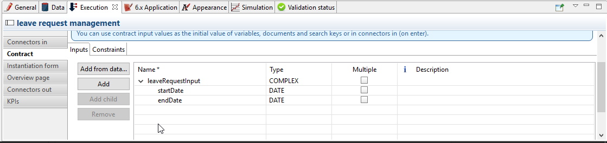
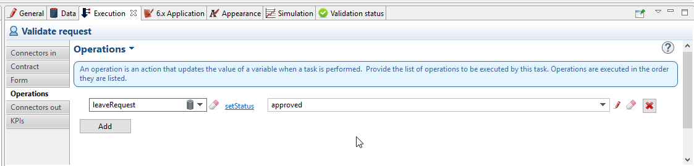
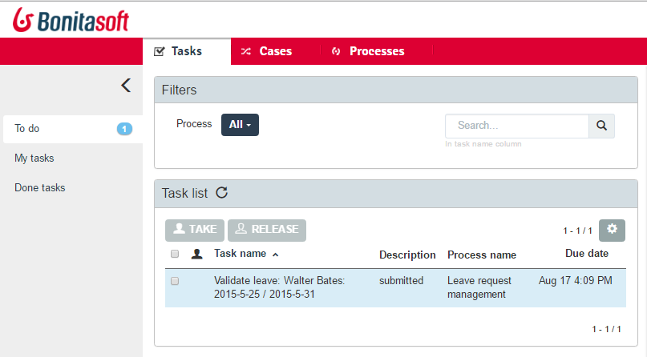
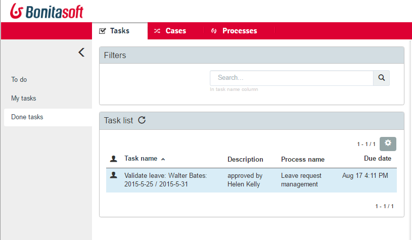

How to create unique task names for the user task list
NOTE: Note: This howto applies to the legacy task list -Bonita BPM 6.0 to 6.5.x versions- as well as the new task list - from Bonita BPM 7.3 and above.
Goal: Leverage Bonita BPM Studio to optimize user comfort and efficiency by inserting case information in task name and task description.
During process modeling, a task is given a generic definition in the process definition, so its name is generic, such as "Validate request". This is useful for development.
Within a process instance (case), this task name must be contextualized with business information specific to the case so that, in the user task list, users effciently pick the right task to do.
Pre-requisites: create the process example
Pool
First, create a new diagram. Then model the process in the first pool:
-
Rename the diagram into "Request management" by clicking in the blanck space around the pool
-
Rename the pool into "Leave request management"
-
Rename the lane into "Manager"
-
Rename the start event into "New leave request"
-
Since the submission of a new leave request happens at pool level (process instantiation), no need for a Submit request task ; just rename the default human task into "Validate request"
-
Add a terminate end event that you can rename "Happy end"
The pool is shown here:

Data model
Then, define a business object that will hold the leave requests data:
-
Go to the Development > Business Data Model > Manage menu option
-
Add a business object named LeaveRequest (with an upper case "L"), with 4 attributes:
-
startDate: as a DATE. Set it as mandatory
-
endDate: as a DATE, Set it as mandatory
-
requesterName: employee who submits the leave request, as a STRING
-
status: whether the request is "submitted" or "approved", as a STRING
-
-
Click Finish
Variables
To allow this business object to be instantiated with each process instance, create a business variable at pool level:
-
In the Data pane of the pool, Pool variables tab, Business variables table, Add a business variable named leaveRequest (with a lower case "l").
-
For Business object, choose LeaveRequest (the default value if you only have one object)
-
Click Finish
Process instantiation contract
To make sure the process gets the information it needs to start a new instance, create a contract:
-
In the Execution pane > Contract tab, click on Add from data… to generate the contract inputs from the business variable
-
Choose the Business variable option, and then the leaveRequest variable
-
Click Next
-
Unselect requesterName and status as the process doesn’t need this information from the form to instantiate
The default values of business data attributes mapped to contract inputs are automatically set thanks to a script generated along with the contract inputs themselves. -
Click Finish, carefully read the warnings, and press OK and OK.
-
In the Execution pane > Contract tab, a complex contract input is created, mapped to the selected attributes of the leaveRequest business variable, as shown here:

In actual BPM projects, we recommend you to also add a description to each contract input. It will be used as input field caption for end-users in the auto-generated form, if you decide to use such forms up to the User Acceptance Test phase of your project.
When the leave request is submitted, status and requesterName default values must be set. To do so, edit the script:
-
Go back to the Data pane, Pool variables tab, Business variables table
-
Click on leaveRequest and on the Edit… button
-
Close to the Default value field, click on the pencil icon
-
In the script, add:
leaveRequestVar.status = "submitted", anddef initiator = BonitaUsers.getProcessInstanceInitiator(apiAccessor,processInstanceId); leaveRequestVar.requesterName = "$initiator.firstName $initiator.lastName"so it becomes:
def leaveRequestVar = new com.company.model.LeaveRequest() leaveRequestVar.startDate = leaveRequestInput.startDate leaveRequestVar.endDate = leaveRequestInput.endDate leaveRequestVar.status = "submitted" def initiator = BonitaUsers.getProcessInstanceInitiator(apiAccessor,processInstanceId); leaveRequestVar.requesterName = "$initiator.firstName $initiator.lastName" return leaveRequestVar -
Click OK, and OK.
Instantiation form
The Studio generates a form based on the contract requirements, for test purposes only. This is the form used in this howto, to save some time.
"Validate request" task
For the sake of this howto, do not specify any contract or form on the task, but just create an operation to switch the request status from "submitted" to "validated" when the task is completed.
-
Click on task "Validate request"
-
Go to the Execution pane > Operations tab
-
Click on Add
-
In the left operand, select leaveRequest
-
As operator, select Use a Java method and then setStatus(String) - void
-
Click OK
-
In the right operand, write approved
The operation is shown here:

There you go. The process is ready. So how can you set a unique name for tasks, to be displayed in the user task list?
Configure the display options
For each case (request), the task should display the requester’s name, the request start date, end date, and status. After the task is submitted, the status will change and the task can also display the validator’s name.
As a good practice, we advise to display static information that defines the task in the Display name field, and dynamic information that appears, disappears or changes over the life of the case in the Display description and Description after completion fields. Therefore:
-
Start date, end date, and requester’s name will be managed in the task name
-
Status and validator’s name will be managed in the description
To configure the display options:
-
Select the Validate request task
-
Go to General pane > Portal tab.
Display name
The task display name will be made of the requester’s first name, last name, and the leave start date and end date.
-
Next to the Display name field, click the pencil icon to display the expression editor.
-
Select the Script expression
-
Give it a name: buildValidateRequestDisplayName()
-
Type the script.
return "Validate leave: ${leaveRequest.requesterName}: ${leaveRequest.startDate.format('yyyy-M-d')} / ${leaveRequest.endDate.format('yyyy-M-d')}".toString() -
Click OK.
Display description
As a dynamic information, status is addressed here:
-
Next to the Display description field, click the pencil icon to display the expression editor.
-
Select the Script expression type
-
Give it a name: buildValidateRequestDisplayDescription()
-
Type the script.
return "${leaveRequest.status}".toString() -
Click OK.
Description after completion
The status of the request when it’s validated as well as the validator’s name are displayed in the Done tasks filter of the user task list. To define it:
-
Next to the Description after completion field, click the pencil icon to display the expression editor.
-
Select the Script expression type
-
Give it a name: buildValidateRequestDescAfterCompletion()
-
Type the script.
import com.bonitasoft.engine.api.APIAccessor; def executedBy = BonitaUsers.getUser(apiAccessor, apiAccessor.processAPI.getHumanTaskInstance(activityInstanceId).executedBy); return "${leaveRequest.status} by ${executedBy.firstName} ${executedBy.lastName}".toString() -
Click OK
When reusing these features for your own projects, make sure that the result of your scripts do not exceed 255 characters.
View it in the task list
-
Save the diagram
-
Run the pool. The default logged in user is Walter Bates
-
Fill out the default instantiation form with two dates
-
Click on Start
Once you are sent to the task list, you can see that the task name is contextualized.
It is computed once, when the task becomes ready.
| The following set of instructions only applies to the task list in Bonita BPM 7.3.0 and above. In earlier versions, the Description field is displayed by default. |
To display the Description column and view the submitted status:
-
Click on the settings wheel icon on the top right of the list
-
Select Description
-
Click outside the settings box The table settings have changed to display the Description column. It will be stored in the local storage of the browser
You can see the description field, showing the status: "submitted", as shown here:

-
Logout
-
Login with helen.kelly / bpm credentials (since Helen Kelly is Walter Bates' manager)
-
Perform the task
-
Go to the Done tasks filter
The Description column now shows the description after completion, with an edited status as well as the name of who performed the task, as shown here :

If you don’t use the description after completion field, the Description column will still show the "display description" information.
Unlike the "technical" name and description of a task in the Studio, which are useful for development, information for each task as display name, display description and description after completion will be unique for each case in the task list, to make the task list more efficient for the users.
Search a task name based on word-based search
Another feature you can use to improve end users efficiency and satisfaction is word-based search:
To allow users to efficiently search by task name, you can configure the search option: from starts by (the beginning of the whole task name string), you can switch to word-based search (the beginning of every word in the task name).
To do so, go to word-based search.
NOTE: Note: Setting the word-based search may result in lesser performance, with some delay experienced by users on the display of search results. Turning this feature on requires some testing on your environment.